| Студент | Железцов Н.В. | ИУ8-124 |
| Научный руководитель | к.т.н. Медведвев Н.В. | |
Распределённые системы трудно проектировать и отлаживать.
Ошибки в таких системах критичны для реальных сервисов.
Формальная модель не гарантирует корректность кода.
Нужна методика сопоставления TLA+ спецификации и реализации.
Цель: разработать методику верификации соответствия TLA+ спецификации и исходного кода, протестировать ее на РВС.
Задачи:
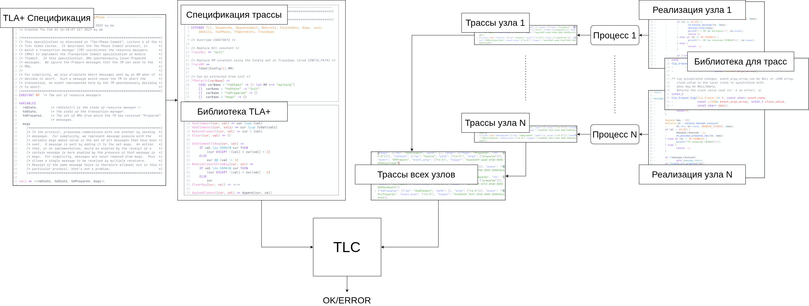
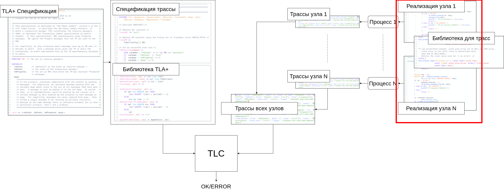
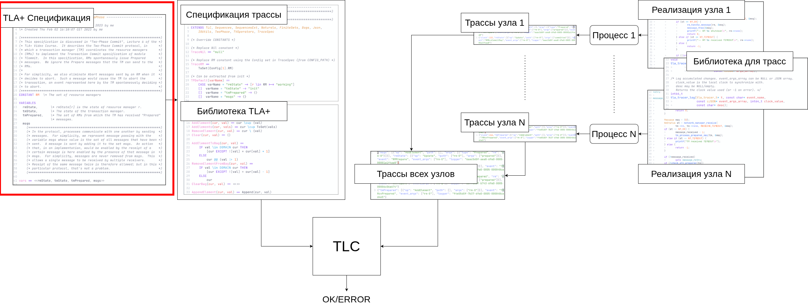
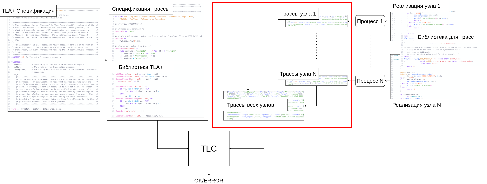
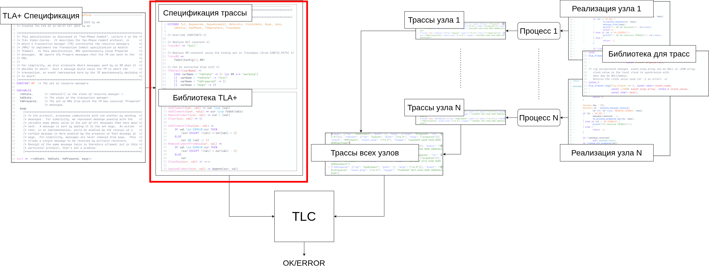
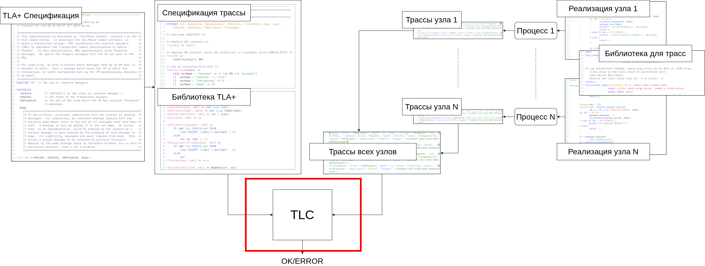
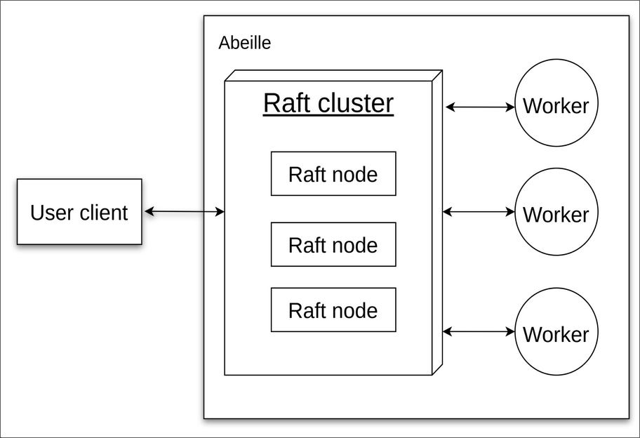
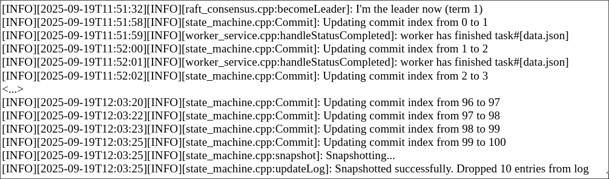
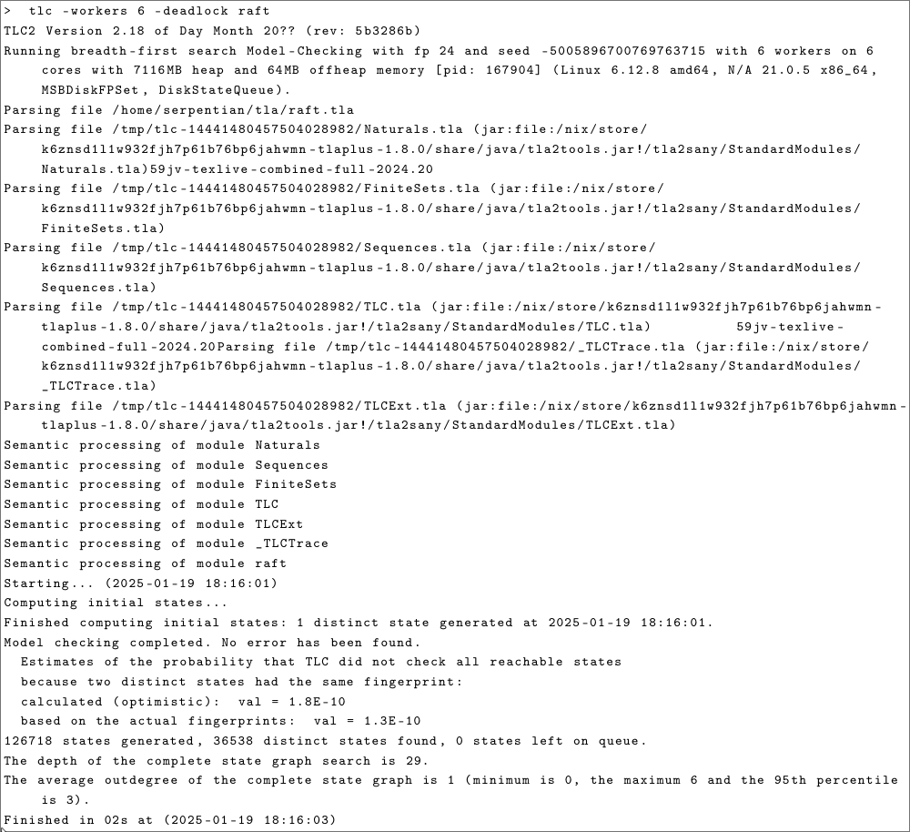
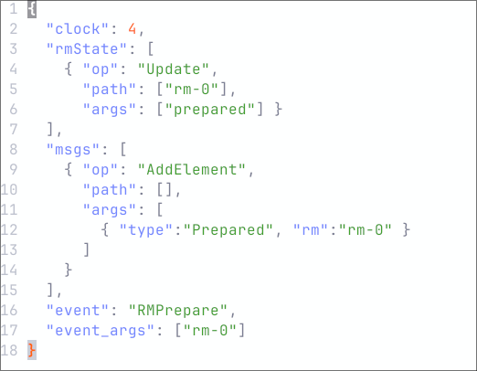
Дано:
\(\mathcal{M} = (X, X_0, R)\) —
система переходов (опр. 4.1).
\(\tau = (\sigma_1,\sigma_2,\dots,\sigma_m)\) —
трасса программы (опр. 4.4).
\(C : \Sigma \times X \times X \to \{0,1\}\) —
предикат согласованности шага (опр. 4.4).
Обозначим:
\(K(\mathcal{M},\tau)\) —
множество допустимых длин согласованных с системой переходов префиксов трассы.
Найти:
Требуется найти такое значение
\(k \in \mathbb{N}_0\),
для которого показатель качества согласованности \(q(k)\) максимален при
ограничениях:
\[ \left\{ \begin{aligned} &q(k) \to \max\limits_k,\\ &k \le m,\\ &k \in K(\mathcal{M},\tau). \end{aligned} \right. \]
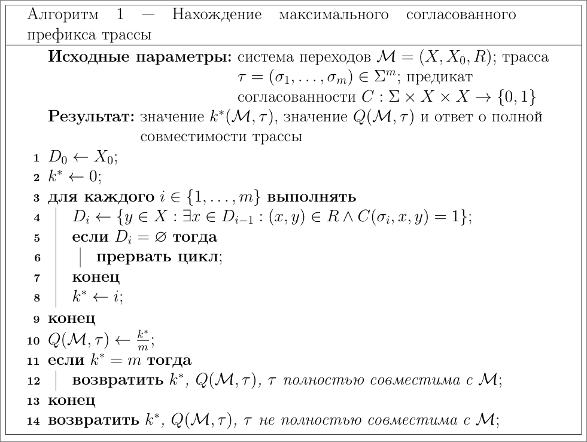
Commit из-за повторных
Prepared.
currentTerm и self-RequestVote.
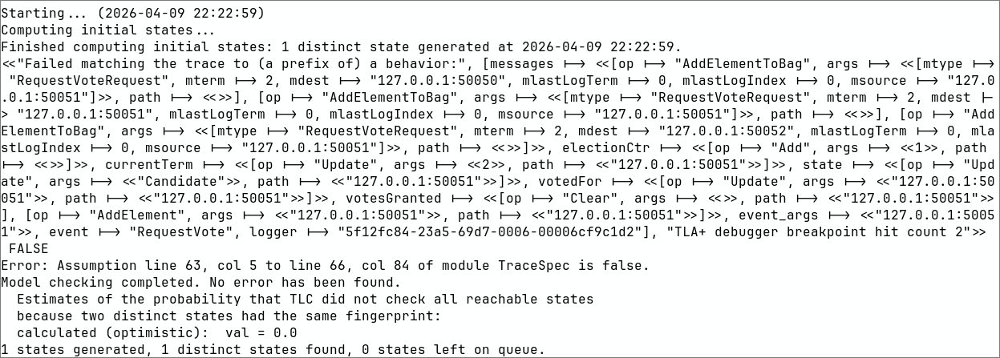
Достоинства
Недостатки
| Показатель | Значение |
|---|---|
| Суммарная трудоёмкость разработки | 436 чел.-ч |
| Трудоёмкость разработки в человеко-днях | 54.5 чел.-дня |
| Календарная продолжительность проекта | 43 рабочих дня |
| Наиболее трудоёмкий этап | Разработка библиотеки трассировки, 112 чел.-ч |
| Затраты на изготовление продукта | 1443246.44 руб. |
| Затраты на внедрение продукта | 2539632.90 руб. |
| Общие затраты на реализацию проекта | 3982879.34 руб. |
| Цена одной копии продукта | 250000 руб. |
| Полная себестоимость одной копии | 144789.70 руб. |
| Планируемый объём продаж | 15 копий в год |
| Объём продаж за 2 года | 30 копий |
| Годовая выручка | 3750000 руб. |
| Выручка за 2 года | 7500000 руб. |
| Прибыль от одной копии | 145200 руб. |
| Годовая прибыль | 2178000 руб. |
| Прибыль за 2 года | 4356000 руб. |
| Срок достижения точки безубыточности по балансу | 13–15 месяцев |
| Чистая приведённая стоимость NPV | 1693073.56 руб. |
| Внутренняя норма доходности IRR | 119.62% |
| Рентабельность инвестиций ROI | 201.82% |
| Экономическая добавленная стоимость EVA | 1889350.71 руб. |
| Срок окупаемости инвестиций | 7.95 месяцев |
Вывод: разработанная методика соответствует действующим нормативно-правовым требованиям Российской Федерации.
Дальнейшее развитие: расширение библиотеки инструментирования на новые языки, прежде всего Lua, и интеграция методики в Tarantool.